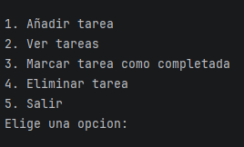

Estudiante de Desarrollo de Aplicaciones Multiplataforma
Desarrollo backend con Java y Spring, apps Android, y todo lo necesario para llevar un proyecto de la idea al código funcionando.
Técnico en Sistemas Microinformáticos y Redes, actualmente cursando el Grado Superior en Desarrollo de Aplicaciones Multiplataforma (DAM). Me motiva seguir aprendiendo y busco una oportunidad de prácticas donde aportar mis conocimientos técnicos y crecer como desarrollador.
Aplicación de consola en Java para gestionar tareas: añadir, listar, completar y eliminar. Estructurada en clases separadas (Tarea, GestorTareas, Main) aplicando encapsulación y colecciones.

Juego de memoria para Android desarrollado en Android Studio, con lógica de emparejamiento de cartas y gestión de estado de la partida.